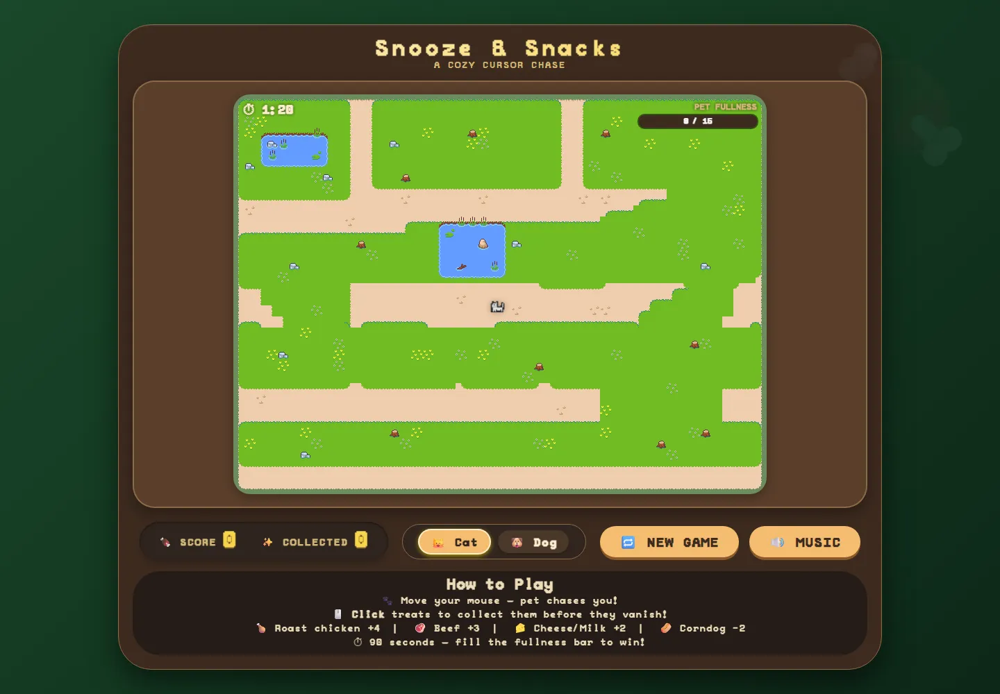
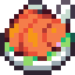
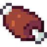
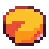
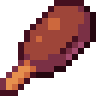
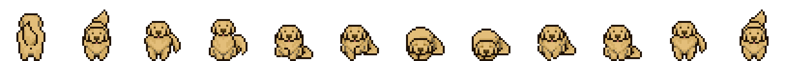
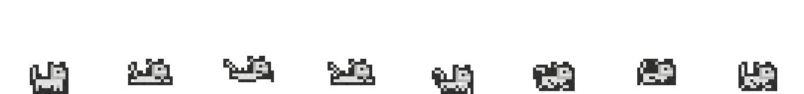

Solo Project · Browser Game
Snooze & Snacks
A cozy cursor-chase game. Pick a cat or a dog, keep it moving, and feed it treats before the timer runs out.
- Course
- Web Scripting 1
- Team
- Solo project
- Built with
- JavaScript, HTML Canvas, CSS
- Map made in
- Tiled map editor

Overview
Snooze & Snacks is a small, calm game that runs right in the browser. Your pet follows your cursor around a park while treats pop up along the paths. Click them before they vanish to fill your pet's fullness bar within 90 seconds. Stop moving for a moment, and your pet curls up for a nap.
I built it on an HTML canvas with plain JavaScript: no game engine or framework, just a render loop, a little state machine and a lot of tiny sprites.
How to play
- Move your mouse and your pet chases it.
- Click treats to collect them before they disappear.
- Fill the fullness bar before the 90-second timer runs out.
-

Roast chicken+4 -

Beef+3 -

Cheese+2 - Milk+2
-

Corndog−2
How it works
-
A pet with moods
A small state machine switches the pet between wandering, running, idling and sleeping. It naps after 3.5 seconds without mouse movement and wakes as soon as you move again.
-
A natural-feeling chase
The pet follows where your cursor was 450ms ago, read from a short history of mouse positions, so it trails behind you instead of snapping to the pointer.
-
A map from Tiled
The park was laid out in the Tiled map editor. The game loads its .tmj file, maps each tile ID to an image, and draws every layer onto the canvas.
-
Clean sprites
Some sprite frames came with white backgrounds, so on load each one is drawn to an offscreen canvas and its near-white, neutral pixels are made transparent.
-
Fair clicking
Treats get a 10px forgiveness radius so tiny pixel snacks are easy to hit, and bad treats can lower your score but never below zero.
-
Little reactions
The cat gives a happy bap and the dog stops to sniff after each treat, and every animation runs at its own frame rate.


What I learned
Snooze & Snacks is a cozy cursor-chase game built with vanilla JavaScript and the HTML canvas. It was my first project where I had to think in terms of a game loop instead of a page reacting to clicks. I managed a central game state (score, fullness, timer, the active pet and its behaviour), preloaded tile and sprite images before the game could start, and redrew the HUD and overlays every frame.
A lot of what I learned was about how the game feels, not just
whether it works. I added a forgiveness radius to click detection
so small treats weren't frustrating to catch. I clamped the score
so bad treats couldn't push it below zero, and capped the fullness
bar at its maximum. None of these rules show up as features, but
without them the game feels unfair or broken. Keeping tunable
values like treat size, time limit, and max fullness in a
CONFIG object meant I could adjust the balance
without searching through the logic.
The one issue the instructor found was in my CSS, not my
JavaScript. My @font-face rule listed several font
formats (.eot, .woff, .ttf,
.svg) and file paths that didn't match the files
actually in my project. The fix was to organize the font into its
own folder, point src at the one
.woff2 file I had with the correct relative path, and
drop the legacy formats modern browers don't need. Because
browsers fail quietly when a font doesn't load, the bug was easy
to miss. The lesson I took is to check in DevTools that assets
actually load, instead of trusting that the page looks about
right.